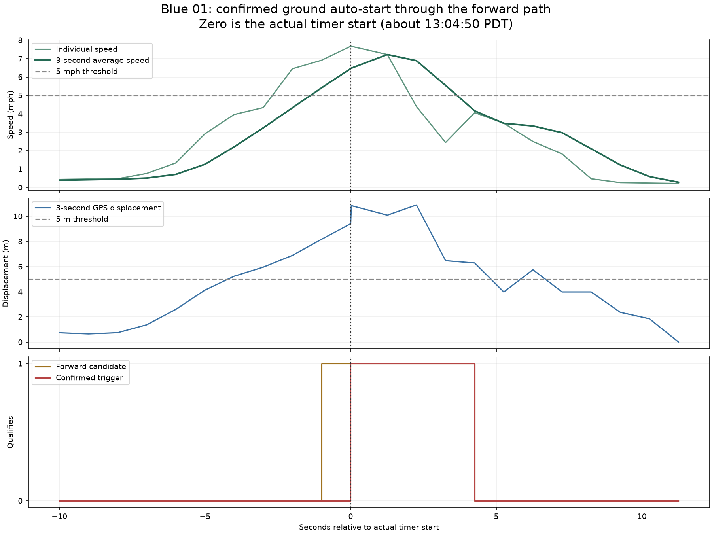
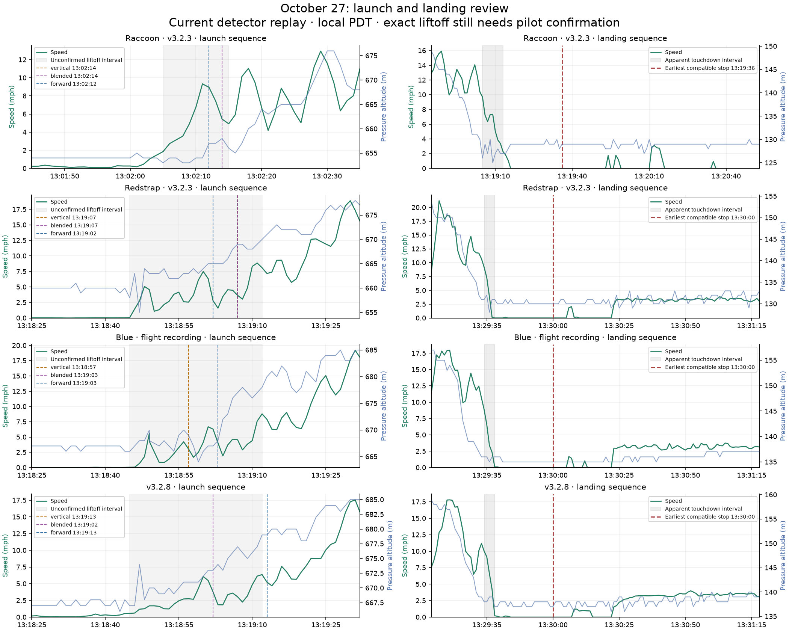

Reviewed five October 27 IGC files from four units. All report firmware v0.2.4-445 and the agreed start configuration. Four recordings were started manually; Blue 01 was started automatically. The other 54 IGCs in the folders have different header dates and were excluded. All displayed times are PDT on October 27, 2026; GPS/event alignment is approximate to about 1–2 seconds.
Blue 01 is a confirmed ground false start. The pilot confirmed the entire record was ground activity. Its actual START record says AUTO and its exact final STARTPATH is Q=01 T=01 (forward). Replaying the committed C++ detector reproduces that decision. This is one start episode, not five separate logs.
| Unit | File | Actual start | First relevant replay trigger | Interpretation |
|---|---|---|---|---|
| Raccoon · v3.2.3 | 01.igc | MANUAL | 13:02:12 (forward) | Launch-sequence trigger; no earlier ground trigger in replay |
| Redstrap · v3.2.3 | 01.igc | MANUAL | 13:19:02 (forward) | Launch-sequence trigger; no earlier ground trigger in replay |
| Blue · ground recording | 01.igc | AUTO | 13:04:51 (forward) | Confirmed ground false start; one episode |
| Blue · flight recording | 02.igc | MANUAL | 13:18:57 (vertical) | Launch-sequence trigger; no earlier ground trigger in replay |
| v3.2.8 | 01.igc | MANUAL | 13:19:02 (blended) | Launch-sequence trigger; no earlier ground trigger in replay |
Blue 01's triggering three-second window averaged 2.884 m/s (6.45 mph), with 9.41 m net GPS displacement. The forward candidate had been active for approximately one additional second. Net pressure departure was −2.93 m while mean vertical rate was +0.21 m/s, so the vertical and blended paths did not cause this start.
The exact 30-sample pre-start histories now include pressure altitude to centimeters, GPS positions, and actual candidate/trigger masks. After allowing the replay to warm up, all 125 comparable pre-start path snapshots match the recorded masks. During recording, pressure altitude and VAR are rounded, so later replay boundaries are approximate.
The independent paths help: Blue's flight record first qualifies vertically at 13:18:57 versus 13:19:03 forward; v3.2.8 first qualifies blended at 13:19:02 versus 13:19:13 forward. These compare detector paths, not delays after confirmed liftoff. Raccoon's apparent launch sequence is around 13:02:05–15; the other flight recordings show launch activity around 13:18:45–13:19:12. Exact liftoff needs pilot confirmation before assigning launch delays.

The pilot believes auto-stop was disabled on all units; no warnings were canceled. All actual END records are MANUAL or POWER_OFF. The following estimates therefore assume auto-stop was enabled, the required sensors were valid, and no warning was dismissed. The no-GPS fallback is preserved, as requested.
Current conditions: pressure altitude strictly within 1 m of its retained anchor; speed below 3 mph when usable GPS exists (otherwise speed is bypassed); valid acceleration within 0.2 g of 1 g; 20 qualifying scheduled checks. A failure resets the count and altitude anchor; the warning appears halfway through.
No in-flight stop evidence: during the evaluated airborne portions, the longest runs passing speed and acceleration alone were 1, 1, 1, and 8 checks respectively. Thus none could reach the required 20 checks, even without testing altitude. This result applies to these recorded flights; it does not establish behavior in stationary hovering.
Exact landing-stop times cannot be recovered. Post-start B records truncate pressure altitude to whole meters, while the test compares centimeters against a strict 1 m threshold. The table shows the earliest and latest first-stop times allowed by all possible centimeter values within those recorded whole meters, under the sampled-input model. A wide range means the recording cannot resolve timing; it is not a measured firmware delay.
| Unit | Apparent landing interval | Earliest compatible stop | Latest across pressure reconstructions | Longest airborne speed/IMU quiet run |
|---|---|---|---|---|
| Raccoon · v3.2.3 | 13:19:05–13:19:13 | 13:19:36 | 13:20:32 | 1 |
| Redstrap · v3.2.3 | 13:29:34–13:29:38 | 13:30:00 | 13:34:51 | 1 |
| Blue · flight recording | 13:29:34–13:29:38 | 13:30:00 | Not established before file ends | 1 |
| v3.2.8 | 13:29:34–13:29:38 | 13:30:00 | 13:32:50 | 8 |
For Blue 02, some compatible pressure sequences allow a stop around 13:30:00, while others do not stop before the manual close at 13:31:31. The records therefore cannot establish a precise stop time. Raccoon and the other units have substantially longer post-landing coverage.
If auto-stop had been enabled from the actual timer starts, it could close manually started logs before takeoff. That is ordinary ground detection, not an in-flight false landing. The following are compatible first-stop bounds from the beginning of each file, independently of the landing estimates above.
| Unit / file | Earliest compatible stop from timer start | Latest across pressure reconstructions |
|---|---|---|
| Raccoon · v3.2.3 | 12:44:48 | 12:47:18 |
| Redstrap · v3.2.3 | 13:13:09 | 13:14:08 |
| Blue · ground recording | 13:05:17 | 13:06:32 |
| Blue · flight recording | 13:17:43 | Not established before file ends |
| v3.2.8 | 13:13:09 | 13:17:36 |
In particular, Blue 01's unwanted ground log could stop around 13:05:17–13:06:32 under the sampled-input model instead of continuing to its actual manual close at 13:14:05. Auto-start could subsequently restart a log on qualifying launch motion.

The new paths respond to all four apparent launch sequences, but Blue 01 proves that the current forward threshold also accepts some entirely ground activity. There is no evidence here for changing auto-stop thresholds; the main stop-analysis limitation is the missing post-start fractional pressure altitude and actual stop counter/anchor diagnostics. No firmware changes were made.
Auto-start uses FlightAutoStart from commit 8d6cb8c5 in codex/flight-start-motion. The actual header is compiled and run in a read-only firmware mount. Signed climb and pressure altitude are also reflected; every decision and path mask remains identical. During the logged flight, the replay evaluates hypothetical idle/start conditions continuously; it does not simulate restarting the actual active log. Consecutive qualifying rows are not separate start events. Pre-start flags reproduce exact sensor validity; post-start CV is a proxy referring to the filtered climb signal, not the exact one-second-average validity used by auto-start. Pressure freshness and precise sampling order were not fully recorded. Gaps over two seconds reset replay history.
Auto-stop reconstruction retains the existing counter and no-GPS behavior. Pressure bounds enumerate all integer-centimeter values that could truncate to each B-record altitude. Possible anchor/count states are propagated; stop states are absorbed. These bounds are conditional on the recorded sampled inputs representing the actual stop checks, without user cancellation. They are not exact-device guarantees. Flight boundaries are inferred and remain unconfirmed. All originals are unmodified.
Summary CSV · Detailed start analysis · Pressure-quantization stop bounds · All C++ replay windows · All-file inventory